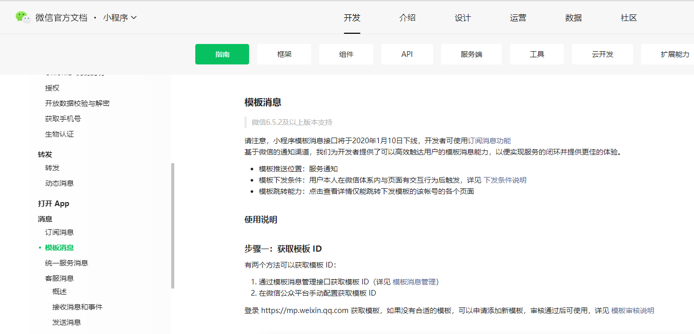

原文连接:https://www.cnblogs.com/Java3y/p/12020285.html
前言
只有光头才能变强。
文本已收录至我的GitHub精选文章，欢迎Star：https://github.com/ZhongFuCheng3y/3y
如果近期有看我文章的同学，会知道我最近在公司做的是推送系统。推送系统在我这也叫做消息管理平台，其实很容易理解：提供一个支持多渠道发送消息的系统。

在前段时间，微信公布：小程序模板消息接口将于2020年1月10日下线，开发者可使用订阅消息功能。
底层接口的变动，对程序员来说意味着什么，你懂的。
人在家中坐，班从天上来
本篇文章主要来聊聊我这边是怎么发送小程序消息的，以及改版后的简单介绍，希望对大家有帮助。
- 本文不涉及任何的高深知识，放心观看。
一、前置知识
发送小程序消息其实很简单，微信提供了微信官方文档供我们开发者去查阅相关的基础知识，提供HTTP接口给我们去方便调用：

对开发者来说，发送小程序消息总结来说就三步：
- 在微信后台创建模板
- 获取下发的权限
- 调用发送接口，发送消息
无论是以前的模板消息，还是现在新的订阅消息，步骤都是一样的。
二、模板消息和订阅消息的区别
为什么微信要把模板消息下线，要上线订阅消息呢？我们从发送小程序的步骤来看，只有“获取下发的权限”是可动的，其余的两步都是相同的。
我们开发者要借助微信平台向用户发消息，需要一个理由(下发的权限)。因为微信还是注重用户体验的。
2.1 模板消息
模板消息下发的理由是：用户最近在小程序活跃过，有过交互的行为（比如说表单提交）。那么开发者可以从这些交互行为中收集formId。
一条formId会保留7天，当我们调用发送接口的时候需要消耗一条formId。如果该用户没有formId的话，那么我们则会发送失败
- 重点：发送模板消息一定要携带
formId
说白了，这个formId就是用户与小程序的交互凭证。微信认为：用户最近使用过你的小程序，你才可以给他/她发送消息。
2.2 订阅消息
从模板消息的下发理由我们可以发现：下发的权利是掌握在我们开发者手上的，只要我们通过用户的各种行为收集到大量的formId，那我们在7天内就可以发送多条消息给到用户。
订阅消息的下发理由是：把消息是否推送的权利还给用户。用户来决定能不能收到推送，简单来说就是：
- 当用户触发某些场景时，给用户弹框，让用户决定是否收到推送（而且只会收到一次）
2.3 让用户收到自己想要的消息
在最开始使用微信的时候，你可能还能收到一些营销类的小程序通知，但近期你应该就收不到的。
- 不允许恶意诱导用户进行触发操作，以达到可向用户下发模板目的
- 不允许恶意骚扰，下发对用户造成骚扰的模板
- 不允许恶意营销，下发营销目的模板
标题不能涉及营销相关内容，包括不限于：消费优惠类、购物返利类、商品更新类、优惠券类、代金券类、红包类、会员卡类、积分类、活动类等营销倾向通知
微信会检测你的模板有无问题，如果有问题就会把你的模板给删掉(当然了，也不让你创建可能是营销类的模板）。没有了模板，消费就发不出去了。
总的来说：微信会通过各种方式来限制你的消息下发，目的是想让用户收到他自己想要的消息。这次将模板消息改成订阅消息，更是把下发消息的权限交给用户了。
至于这件是好事，还是坏事。不同人有不同的看法。
有的人会觉得：让用户选择是否收到消息，用户所需要的操作就多了，弹窗也是对用户的一种打扰。如果用户不熟悉订阅消息或者直接点了“取消”，小程序就没法通知到用户了，用户可能因此错失服务，对商家和用户都是损失。
有的人也会觉得：把推送消息的权利掌握在用户手里，能很大程度上避免商家的恶意骚扰
对于此次的改版，可以在评论区下谈谈你的看法~
三、我们是怎么做的？
我这边来简单说一下我这边是怎么接入推送小程序消息的，希望对想要接入小程序消息的同学有一定的帮助。
首先，针对在微信后台创建的模板，我们是先把微信后台的模板拉取到自己的数据库保存起来，然后再做一个管理页面对模板进行管理。
如果某个消息使用到了该模板，我们同样也会做关联起来（因为这样可以方便查阅哪些消息使用了这个模板）
- 正因为有了这个功能，所以我们这次迁移就可以很方便整理出目前还在使用的模板有哪些，使用的场景在哪。后续只要将消息的模板ID改成订阅消息的模板ID就好了。
像我司不单单只有一个小程序，所以要对小程序进行分类，这里就不再赘述了。实际上就是封装了一层，例如：蘑菇街女装 标识为88，蘑菇街直播购物台标识为 99
在设计和写代码的时候要考虑后续的可扩展性
在模板消息的时候，前端会打formId的点，我这边会在Storm将MQ的数据清洗放到Redis里边。然后我这边在发送之前就判断用户有没有对应的formId。
现在微信将模板消息改为订阅消息，formId的收集到我这边的Storm解析进Redis的操作都免去了。微信貌似也没有提供接口给我判断用户是否有授权过。所以我只能在调用下发接口时，根据返回值来判断用户是否授权。
如果新接入微信小程序消息的同学，那整块流程就简单很多了。
- 前端同学只要在必要的场景下弹窗，让用户授权
- 后端的同学直接下发到用户，根据返回值判断下发的情况。
所以，现在我这边如果要下发一条消息主要有两个步骤：
- 在推送后台新建一条消息（选择微信的模板、消息创建者的基本信息、消息相关的规则处理（是否去重等等）
- 业务方调用我暴露的接口
业务方调用我这边的暴露接口，我主要做以下的事情：
- 对业务方的传入参数进行简单的校验，拼接成完整的一个模板消息内容
- 如果业务方传入的是
userId，我这边需要转为openId - 对消息速度限流，调用微信的下发接口
除了消息下发以后，我们还会考虑到消息下发是否成功以及效果的问题（有无实时数据供查看，有无离线报表分析），所以我这边是这样做的：
- 在关键的链路上进行打点
- 业务方调用我接口，我已经确认收到消息了
- 这条消息由于业务原因被过滤掉了（可能是userId转openId失败了）
- 在下发时可能由于模板/token/用户无授权等等情况
- 将打点的信息写到Kafka，再由Storm清洗，实时的查询的进Redis，离线的落到Hive表
这里的打点实际上就是我们打日志
比如下面是我实时推送后，根据userId查询推送的情况：
最后
总的来说，小程序推送消息并不难，也仅仅是几个接口而已。现在改版为订阅消息后，那接入起来就更加方便了。再过一个月，你们使用小程序的时候可能就会收到各种的弹窗提醒你们是否要授权xxx模板消息。
不知道大家看完我这篇文章有什么看法，欢迎在评论区留言。我会经常分享我在工作中遇到的问题以及学习后精心整理后的笔记，希望对大家有所帮助，觉得我的文章还有点东西，不妨关注我！
本已收录至我的GitHub精选文章，欢迎Star：https://github.com/ZhongFuCheng3y/3y
乐于输出干货的Java技术公众号：Java3y。公众号内有300多篇原创技术文章、海量视频资源、精美脑图，关注即可获取！

非常感谢人才们能看到这里，如果这个文章写得还不错，觉得「三歪」我有点东西的话 求点赞 求关注️ 求分享👥 求留言💬 对暖男我来说真的 非常有用！！！
创作不易，各位的支持和认可，就是我创作的最大动力，我们下篇文章见！